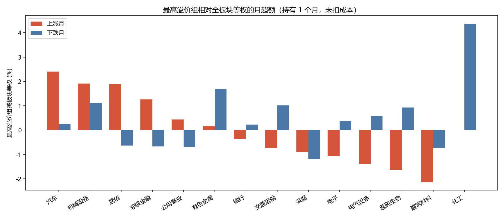

全板块等权是当月该板块里有 1 个月收益的全部股票简单平均。上涨月指这个等权收益大于 0，下跌月指小于等于 0。连续上涨指信号月上这个等权连续为正，并且这段长于 3 个月。持有 1 个月，未扣成本。四组板块的最高组是第 4 组。
这个切分用的是持有期里板块自己的涨跌，用来描述已经发生的行情，不是月末已经知道的下单条件。

| 板块 | 组数 | 周期 | 月数 | 超额 | t | p | 超额为正占比 |
|---|---|---|---|---|---|---|---|
| 医药生物 | 5 | 上涨 | 56 | -1.63% | -2.21 | 0.0314 | 39.29% |
| 医药生物 | 5 | 下跌 | 51 | 0.93% | 1.21 | 0.2337 | 43.14% |
| 电子 | 4 | 上涨 | 6 | -1.08% | -0.59 | 0.5814 | 33.33% |
| 电子 | 4 | 下跌 | 6 | 0.36% | 0.37 | 0.7285 | 50.00% |
| 非银金融 | 5 | 上涨 | 56 | 1.26% | 1.70 | 0.0957 | 57.14% |
| 非银金融 | 5 | 下跌 | 59 | -0.67% | -1.86 | 0.0684 | 38.98% |
| 银行 | 5 | 上涨 | 59 | -0.36% | -1.79 | 0.0783 | 33.90% |
| 银行 | 5 | 下跌 | 56 | 0.23% | 1.17 | 0.2486 | 57.14% |
| 机械设备 | 5 | 上涨 | 39 | 1.91% | 0.83 | 0.4144 | 38.46% |
| 机械设备 | 5 | 下跌 | 39 | 1.11% | 1.02 | 0.3126 | 56.41% |
| 交通运输 | 5 | 上涨 | 68 | -0.75% | -2.16 | 0.0341 | 30.88% |
| 交通运输 | 5 | 下跌 | 47 | 1.02% | 2.32 | 0.0248 | 59.57% |
| 汽车 | 5 | 上涨 | 61 | 2.40% | 1.59 | 0.1176 | 49.18% |
| 汽车 | 5 | 下跌 | 54 | 0.27% | 0.34 | 0.7364 | 48.15% |
| 有色金属 | 5 | 上涨 | 53 | 0.15% | 0.10 | 0.9231 | 43.40% |
| 有色金属 | 5 | 下跌 | 41 | 1.71% | 1.26 | 0.2151 | 51.22% |
| 公用事业 | 5 | 上涨 | 53 | 0.44% | 0.58 | 0.5670 | 52.83% |
| 公用事业 | 5 | 下跌 | 59 | -0.69% | -1.34 | 0.1870 | 50.85% |
| 化工 | 4 | 上涨 | 2 | 0.00% | |||
| 化工 | 4 | 下跌 | 6 | 4.38% | 1.75 | 0.1400 | 83.33% |
| 通信 | 5 | 上涨 | 24 | 1.89% | 0.72 | 0.4762 | 50.00% |
| 通信 | 5 | 下跌 | 17 | -0.63% | -0.41 | 0.6895 | 41.18% |
| 电气设备 | 4 | 上涨 | 27 | -1.38% | -0.89 | 0.3831 | 22.22% |
| 电气设备 | 4 | 下跌 | 33 | 0.57% | 0.72 | 0.4758 | 63.64% |
| 采掘 | 5 | 上涨 | 65 | -0.90% | -1.37 | 0.1749 | 33.85% |
| 采掘 | 5 | 下跌 | 50 | -1.19% | -1.86 | 0.0693 | 26.00% |
| 建筑材料 | 5 | 上涨 | 15 | -2.14% | -1.15 | 0.2678 | 26.67% |
| 建筑材料 | 5 | 下跌 | 30 | -0.75% | -0.75 | 0.4623 | 50.00% |
| 板块 | 阶段数 | 阶段内月数 | 月均超额 | t | p | 月超额为正占比 | 累计超额为正的段数 |
|---|---|---|---|---|---|---|---|
| 医药生物 | 5 | 22 | -2.77% | -2.30 | 0.0319 | 40.91% | 0 |
| 电子 | 0 | 0 | 0 | ||||
| 非银金融 | 4 | 17 | 1.73% | 2.09 | 0.0526 | 58.82% | 3 |
| 银行 | 2 | 14 | -0.14% | -0.33 | 0.7447 | 28.57% | 1 |
| 机械设备 | 2 | 10 | -1.74% | -1.39 | 0.1992 | 20.00% | 0 |
| 交通运输 | 7 | 33 | -1.28% | -2.43 | 0.0207 | 27.27% | 2 |
| 汽车 | 2 | 14 | 0.81% | 0.23 | 0.8180 | 50.00% | 1 |
| 有色金属 | 5 | 27 | 1.30% | 0.59 | 0.5592 | 51.85% | 3 |
| 公用事业 | 4 | 23 | 0.33% | 0.28 | 0.7802 | 52.17% | 2 |
| 化工 | 0 | 0 | 0 | ||||
| 通信 | 3 | 12 | 2.61% | 0.65 | 0.5284 | 50.00% | 2 |
| 电气设备 | 2 | 11 | -2.61% | -1.78 | 0.1054 | 18.18% | 0 |
| 采掘 | 4 | 21 | -2.52% | -1.67 | 0.1097 | 23.81% | 1 |
| 建筑材料 | 1 | 5 | -2.95% | -0.83 | 0.4529 | 20.00% | 0 |
全部阶段 41 段，最高溢价组累计超过板块的有 15 段。各段起止见同目录 CSV。
t / p 与第 2 步相同，是月度超额均值的检验。1 个月滞后取 0。p 低于 0.05 记为显著。